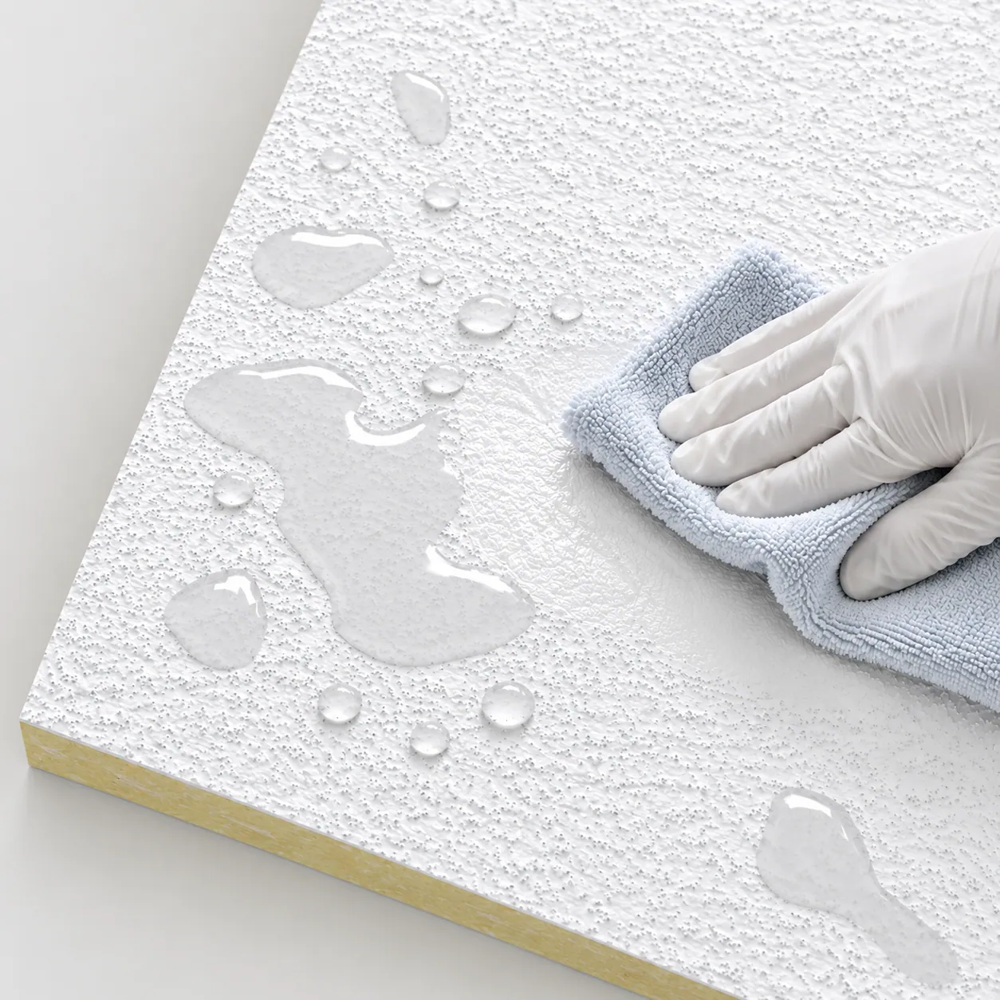
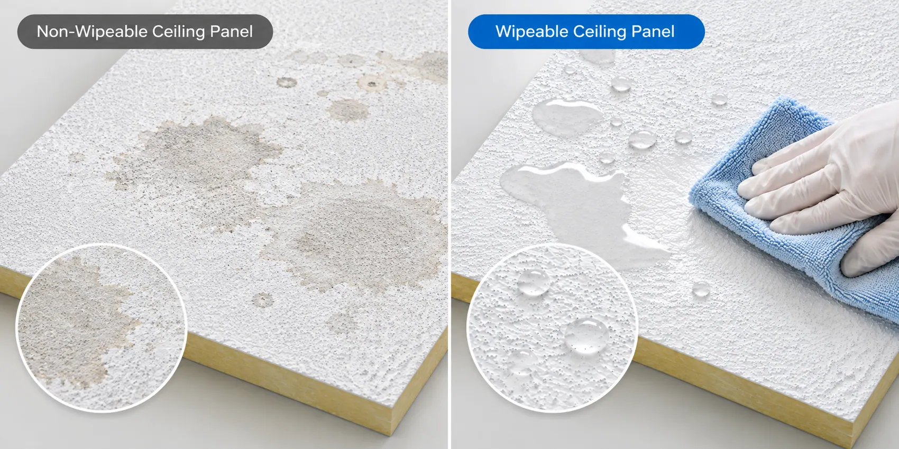
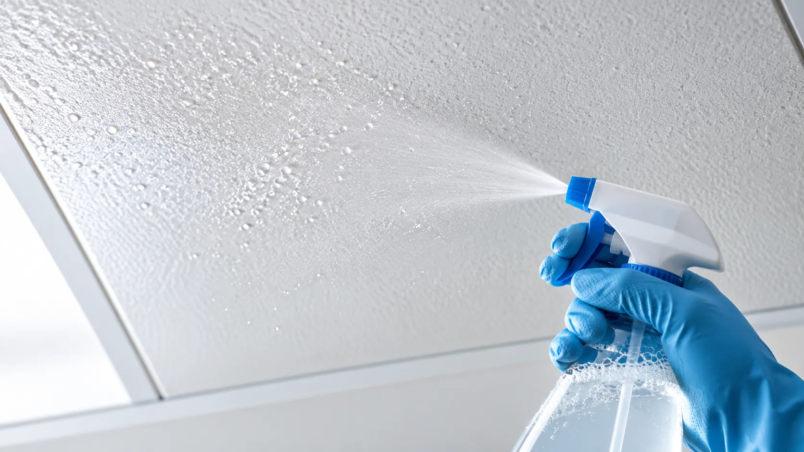

Cleaning wear
Frequent wiping or washing may cause visible wear or coating deterioration.
WASHABLE FIBERGLASS FACING SOLUTIONS
A Cleaner Surface. Designed for Demanding Environments.
A coated fiberglass facing for acoustic ceiling panels requiring wiping and washing. Select the grade for cleaning methods, chemicals and humidity, then test the complete panel.

BEYOND SURFACE APPEARANCE
Repeated cleaning, chemical contact and humidity can affect an unsuitable ceiling surface.
Frequent wiping or washing may cause visible wear or coating deterioration.
Cleaning agents and disinfectants can change surface appearance and integrity.
Moisture exposure can challenge the durability of conventional ceiling facings.
Poorly bonded coatings or unsuitable substrates may release loose material during cleaning.

ENGINEERED FOR EASY MAINTENANCE
Cleaning durability, chemical compatibility and moisture behavior depend on the selected material and maintenance conditions.
A treated surface supports wiping and washing while helping maintain coating integrity under appropriate procedures.
Compatible coating formulations can be evaluated against the intended cleaners and disinfectants.
The coated fiberglass surface helps limit moisture-related deterioration in suitable applications.
Fiberglass supports handling, lamination and conversion into finished ceiling panels.
SEE THE DIFFERENCE
Match the coating to cleaning frequency, chemical contact and acoustic panel construction.
Frequent cleaning or unsuitable chemicals may cause wear, coating damage or appearance changes.
A direction for repeated wiping and washing under suitable cleaning conditions.

A direction for enhanced compatibility with selected cleaners and disinfectants in demanding maintenance routines.
HOW IT WORKS
The washable coating is the visible maintenance surface. The core supplies the primary sound-absorbing structure.

A lightweight veil with a functional coating supplies the decorative finish and relevant cleaning, moisture and chemical characteristics.
The core provides the main sound-absorbing structure of the finished ceiling panel.
The facing and acoustic core should be evaluated as a complete ceiling system to confirm cleaning durability, moisture behavior, acoustic performance, and manufacturing compatibility.
FIND YOUR FACING SOLUTION
Select a starting grade for the environment, then verify the actual cleaning and ceiling-system conditions.
A facing solution for ceiling panels requiring routine wiping and washing in schools, classrooms and general commercial interiors.
For evaluation in frequently cleaned healthcare interiors where compatibility with the chosen agents and disinfectants is required.
For humid interiors such as changing rooms, washrooms and pool facilities, subject to system-level suitability testing.
TECHNICAL INFORMATION
Confirm the grade against the planned cleaning procedures, acoustic core and manufacturing process.
| Parameter | Specification |
|---|---|
| Product | Washable Fiberglass Coated Veil |
| Base Material | Fiberglass Veil |
| Surface Treatment | Washable Functional Coating |
| Color | White / Customizable |
| Surface Finish | Fine, Uniform Texture |
| Cleaning Performance | Washable & Wipeable |
| Chemical Resistance | Compatible Cleaners & Disinfectants, Grade-Dependent |
| Moisture Resistance | Available by Product Grade |
| Weight | Grade-Dependent / Customizable |
| Roll Width | Customizable |
| Air Permeability | Grade-Dependent |
| Compatible Core | Mineral Wool / Glass Wool |
| Supply Form | Rolls |
| Customization | Width, Weight, Coating & Surface Properties |
| Fire Performance | Test Documentation Available for Applicable Grades |
Technical specifications, cleaning resistance, chemical compatibility, fire classification, and test results vary by product grade and finished panel construction. Contact GRECHO for detailed technical information and available test documentation.
APPLICATIONS
Evaluate washable fiberglass facing materials for cleaning, chemical exposure and moisture management with the complete ceiling construction.
With a suitable acoustic core, evaluate ceiling panels for hospital corridors, waiting areas and other frequently cleaned healthcare interiors against finished-system requirements.
Wipeable facings can be evaluated with suitable acoustic cores for practical daily maintenance and acoustic requirements.
Assess prolonged humidity, condensation, airborne chemicals, core compatibility, corrosion risks and long-term complete-system performance.
FROM SAMPLE TO PRODUCTION
Use representative maintenance conditions and your own panel manufacturing process.
Share the core, ceiling use, cleaning procedure, chemical exposure and technical targets.
Check appearance, washability, coating integrity and relevant material properties.
Evaluate representative cleaning methods and compatible chemicals alongside production compatibility.
Agree the grade, roll dimensions, coating characteristics and technical requirements.
FAQ
Actual compatibility depends on the chemical formulation, concentration, contact time, temperature, and cleaning frequency. Testing under intended conditions is recommended.
Suitability for operating rooms, cleanrooms, and other controlled healthcare spaces must be verified against the applicable finished-system requirements.
Its airflow resistance can influence the finished panel. Select and test it with the mineral wool or glass wool core.
LET'S FIND YOUR SOLUTION
Discuss samples for your application, acoustic core, cleaning routine and chemical exposure.